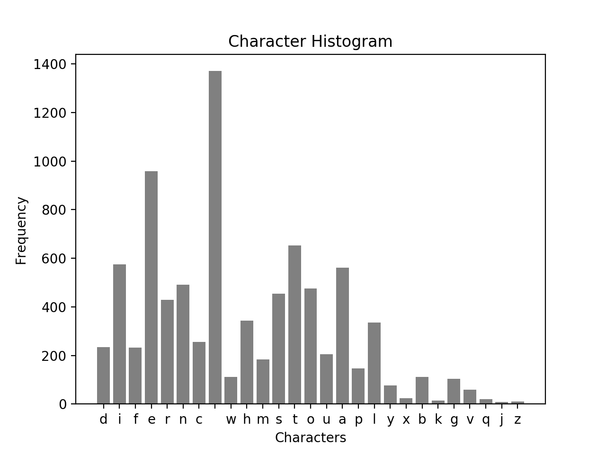
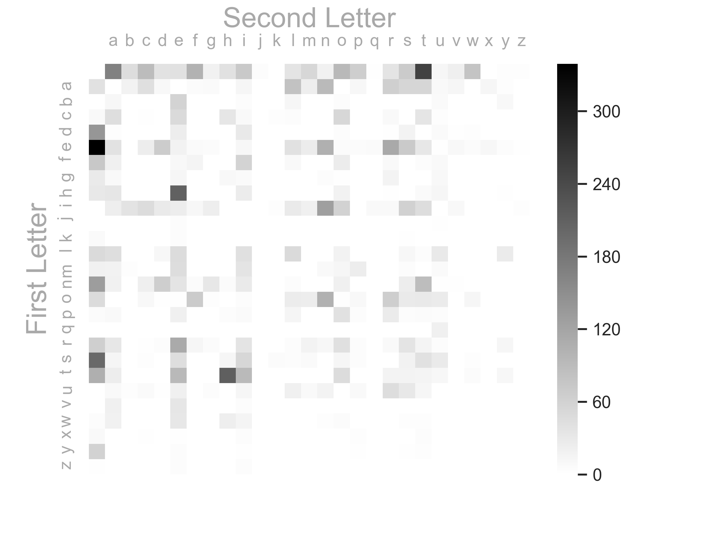
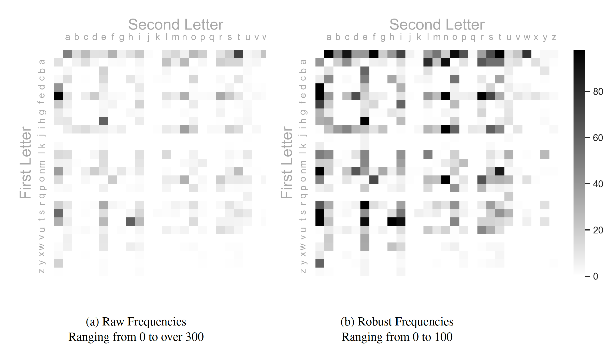

Python Character Analysis
Introduction
I have separated my work into sections so ease of flow. All Python code is included in this article. Observations of the data are shown in the histogram and heatmap below.
Header
The header of my python file gives general information:
Title: Python Character Analysis
Author: Eric Pena
Date: Oct. 2019
Text Source:
Academic Sample
http://www.thegrammarlab.com/?nor-portfolio=1000000-word-sample-corpora
Packages
Below are important packages that I am importing for the program to work properly.
import pandas as pd
import fileinput as fi
import matplotlib.pyplot as plt
import seaborn as sns
import string
User Defined Functions
I have defined several functions used by the \verb|main()| function:
def read(file):
"""Reads given file and parses characters
Args:
file: the text file to be parsed
Returns:
charArr: parsed character array
"""
return [i for line in fi.input(file) for i in line]
# -------------------------------------------------------------------
def count(array):
"""Counts characters and creates freq table
Args:
array: character array of text
Returns:
freq: dictionary that represents freq table
"""
return {c: array.count(c) for c in array}
# -------------------------------------------------------------------
def partition2(array):
"""Works similar to Mathematica's partition function
but slightly differently. This function will create
a string that combines each pair of characters in
order to be hashed through by the count function.
Args:
array: this array
Returns:
"""
return [str(array[i]) + str(array[i + 1]) for i in range(len(array) - 1)]
# -------------------------------------------------------------------
def dict_print(d):
"""Print function specifically for dictionary
Args:
d: dictionary
Returns:
None: only prints out the contents of the dictionary
"""
[print(key[0] + ' --- ' + key[1] + ' :\t' + str(val)) for key, val in d.items()]
# -------------------------------------------------------------------
def to_dataframe(d):
"""converts the dictionary of transitions to a dataframe from which
can be turned into a heatmap
Args:
d: dictionary
Returns:
df: dataframe
"""
# :: Create dataframe
df = pd.DataFrame(columns=('First', 'Second', 'Frequency'))
# :: Initialize matrix
alpha = list(string.ascii_letters)[:26]
alpha.append(' ')
for i in alpha:
for j in alpha:
df = df.append(pd.Series([i, j, 0], index=df.columns), ignore_index=True)
# :: Pivot our dataframe to make a matrix for heatmap
df = df.pivot("First", "Second", "Frequency")
# :: Add relevant frequencies to the matrix
for k in d:
df[k[1]][k[0]] = d[k]
df = df[df.columns].astype(int)
return df
# -------------------------------------------------------------------
def show_heatmap(df, filename):
"""Create and plot heatmap of data
Args:
df: dataframe of frequencies
Returns:
None: Instead will plot a heatmap of the data
"""
# :: Creae heatmap and customize
sns.set()
ax = sns.heatmap(df, cmap="binary", robust=True, xticklabels=True, yticklabels=True)
ax.xaxis.set_label_position('top')
ax.xaxis.set_ticks_position('top')
ax.spines['top'].set_visible(False)
ax.tick_params(top=False, left=False)
ax.xaxis.label.set_color('darkgray')
ax.yaxis.label.set_color('darkgray')
ax.tick_params(axis='x', colors='darkgray')
ax.tick_params(axis='y', colors='darkgray')
plt.xlabel('Second Letter', fontsize=18)
plt.ylabel('First Letter', fontsize=18)
plt.show()
figure = ax.get_figure()
figure.savefig(filename, dpi=400)
Main Program
This shows the code for the main program which utilizes the functions above.
def main():
# ---------------------------MAIN PROGRAM---------------------------
# :: Reads in text file
# :: Counts the frequencies
# :: Data stored in dictionary
# :: Plots histogram of results
freq_dict = count(read('text.txt'))
plt.bar(freq_dict.keys(), freq_dict.values(), color='gray')
plt.title('Character Histogram')
plt.xlabel('Characters')
plt.ylabel('Frequency')
plt.show()
# :: Reads in text file
# :: Partitions in 2-tuples for transitions
# :: Data stored in dictionary
# :: Frequencies are printed to console/terminal
dict_print(count(partition2(read('text.txt'))))
df = to_dataframe(count(partition2(read('text.txt'))))
print(df)
filename = '/Users/ericpena/iCloud/Binghamton_Courses/500_Computational_Tools/HW2/heatmap.png'
show_heatmap(df, filename)
if __name__ == '__main__':
main()
Plot of Histogram
 Figure 1 — Histogram that shows frequencies of characters appearing in the text
Histogram Observations
Here are a few observations about the histogram above:
- $space\ character$: The space character is by far the most frequent. This makes sense since after each word, a space appears
- ${j, z, x, k}$: Characters such as $j$, $z$, $x$, and $k$ are low frequency — not often present in common words
- $vowels$: It makes sense for the frequency of the vowels to be higher than consonants given how English is structured
Heatmap of Character Transitions
The heat map below visually represents the frequencies of the transitions $c_i \rightarrow c_{i+1}$ where $c_i$ is the $i^{th}$ character in the supplied text file.
 Figure 2 — Heatmap that shows the frequencies of character transitions
Heatmap Observations
Here are a few observations about the heatmap above:
- $Common\ Occurences$: Some common occurrences: $t \rightarrow h$, $i \rightarrow n$, $n \rightarrow t$, $r \rightarrow e$, $t \rightarrow i$
- $Spaces$: As expected the row and column of the $space$ is quite active — this makes sense since all words start and end with a $space$
- $Bare$: It’s interesting but not unexpected that the right bottom right is quite bare — very low frequencies later in the alphabet
Robustness Parameter
The heatmap above is actually using a robust=True parameter that normalizes the frequencies into a small range in order to improve the visualization. This is an improvement over the heatmap with the original frequencies. See below for the difference between the $RAW$ heatmap and the $ROBUST$ heatmap. More visual information can be obtained by using the $robust$ parameter since the `interesting’ events are much more pronounced.
 Figure 3 — Shows the difference between the Raw and Robust frequencies for the heatmap
Appendix — Output Data
Histogram Frenquencies
{’d’: 234, ‘i’: 574, ‘f’: 233, ’e’: 958, ‘r’: 428, ’n’: 492, ‘c’: 255, ’ ‘: 1370, ‘w’: 111, ‘h’: 344, ’m’: 184, ’s’: 455, ’t’: 653, ‘o’: 475, ‘u’: 206, ‘a’: 561, ‘p’: 146, ’l’: 336, ‘y’: 77, ‘x’: 24, ‘b’: 111, ‘k’: 15, ‘g’: 103, ‘v’: 60, ‘q’: 20, ‘j’: 9, ‘z’: 11}
Heatmap Frenquencies
d — i : 30 i — f : 11 f — f : 15 f — e : 10 e — r : 114 r — e : 113 e — n : 105 n — c : 22 c — e : 49 e — : 339 — w : 79 w — h : 23 h — e : 210 — m : 53 m — c : 1 c — : 8 — i : 72 i — s : 61 s — : 199 — t : 252 t — h : 212 m — o : 13 o — i : 5 s — t : 41 t — u : 11 u — r : 46 — c : 90 c — o : 54 o — n : 104 n — t : 88 t — e : 94 t — : 107 m — a : 18 a — : 40 a — s : 55 s — s : 18 — o : 93 o — f : 70 f — : 73 — s : 69 s — a : 14 a — m : 23 m — p : 25 p — l : 14 l — e : 47 — a : 168 a — f : 6 f — t : 4 r — : 64 — h : 40 h — u : 12 u — m : 9 m — i : 37 i — d : 28 i — t : 46 t — y : 11 y — : 60 — e : 40 e — x : 11 x — p : 3 p — o : 41 o — s : 28 s — u : 28 a — n : 92 n — d : 65 d — : 140 m — d : 1 — d : 39 d — r : 2 r — y : 12 — r : 37 e — s : 71 u — l : 21 l — t : 4 t — s : 17 s — c : 3 c — u : 3 u — s : 31 s — i : 53 i — o : 60 n — : 131 c — h : 34 e — m : 26 i — c : 47 c — a : 45 a — l : 81 l — : 50 o — m : 24 t — i : 92 — f : 103 f — i : 59 i — b : 38 b — e : 59 r — s : 37 w — e : 33 e — l : 40 l — l : 49 — k : 1 k — n : 1 n — o : 21 o — w : 12 w — n : 3 h — a : 34 a — t : 55 — l : 37 l — i : 42 i — g : 23 g — n : 4 o — c : 10 l — u : 30 l — o : 18 i — n : 128 n — v : 2 v — e : 34 g — a : 8 e — d : 68 o — u : 27 u — n : 17 n — e : 37 — q : 2 q — u : 20 u — a : 8 i — e : 24 d — o : 5 o — e : 2 — n : 19 o — t : 30 a — d : 10 d — d : 1 — u : 12 u — p : 9 p — : 6 t — o : 47 o — : 48 i — m : 21 l — y : 27 — b : 46 e — c : 25 a — u : 9 s — e : 44 n — l : 4 a — j : 1 j — o : 1 o — r : 66 a — r : 64 e — p : 6 r — t : 15 d — e : 24 e — t : 32 r — m : 17 — p : 66 p — e : 20 c — t : 35 p — r : 27 r — o : 42 e — i : 11 n — s : 24 x — t : 4 t — r : 17 r — a : 32 a — c : 43 t — a : 24 a — b : 18 b — l : 12 r — g : 6 n — i : 28 t — t : 15 u — c : 7 h — : 31 w — a : 19 a — x : 12 x — e : 2 f — a : 20 l — c : 1 o — h : 1 h — o : 18 o — l : 26 l — s : 11 c — i : 8 d — s : 16 i — l : 28 l — a : 44 r — l : 5 e — q : 7 u — e : 20 a — p : 11 p — p : 4 o — x : 1 x — : 9 w — t : 3 h — i : 26 — g : 19 g — o : 2 o — o : 2 o — d : 2 a — g : 7 g — r : 16 e — e : 18 m — e : 46 — v : 22 v — a : 20 b — y : 10 e — z : 2 z — : 2 n — z : 1 z — a : 1 f — l : 8 a — v : 12 g — h : 10 b — a : 11 r — n : 11 n — h : 6 s — k : 6 k — : 7 e — a : 39 r — c : 2 g — e : 13 u — g : 5 g — u : 10 u — i : 13 e — y : 5 n — g : 33 g — : 29 f — r : 9 m — : 19 r — i : 36 e — o : 6 o — g : 3 p — h : 4 e — g : 6 g — i : 7 o — p : 10 r — f : 13 s — h : 13 w — s : 3 h — t : 7 a — i : 13 w — i : 15 s — w : 3 x — i : 4 m — u : 7 d — u : 7 i — q : 9 p — i : 7 i — i : 1 i — : 1 e — f : 7 p — a : 9 c — k : 3 k — e : 5 e — v : 10 f — u : 9 b — s : 1 s — o : 13 r — p : 4 p — t : 6 m — n : 8 f — o : 26 n — f : 6 d — a : 3 i — a : 23 h — l : 1 i — k : 3 n — y : 1 n — a : 19 r — v : 1 l — w : 1 a — y : 3 y — s : 2 v — i : 5 r — r : 8 s — p : 5 i — z : 3 z — e : 4 o — b : 1 b — t : 1 i — p : 1 y — i : 2 i — v : 10 c — r : 9 c — c : 2 g — y : 1 — z : 3 z — i : 4 s — m : 7 c — l : 4 p — u : 4 t — w : 6 m — s : 5 b — o : 5 l — d : 11 b — i : 4 p — s : 4 b — u : 7 u — t : 12 h — y : 2 y — d : 1 i — r : 8 c — y : 1 g — g : 1 a — z : 1 n — k : 1 y — z : 1 l — m : 1 — y : 3 y — p : 2 x — c : 2 r — u : 4 u — f : 1 d — l : 1 o — a : 1 s — y : 1 y — m : 1 o — v : 1 d — v : 2 u — : 1 — j : 5 j — u : 2 y — t : 3 a — q : 1 y — r : 1 g — l : 1 w — o : 6 r — d : 5 u — d : 2 u — b : 3 y — e : 4 u — o : 1 m — m : 1 e — w : 6 w — : 5 s — b : 1 g — f : 1 m — b : 3 a — w : 1 a — k : 1 b — : 1 n — u : 2 k — s : 2 n — j : 1 j — a : 1 s — r : 1 a — e : 1 j — e : 5 a — h : 1 r — b : 1 o — j : 1 e — u : 2 v — o : 1 s — l : 4 h — m : 1 h — r : 2 d — w : 3 w — r : 1 e — j : 1 s — q : 1